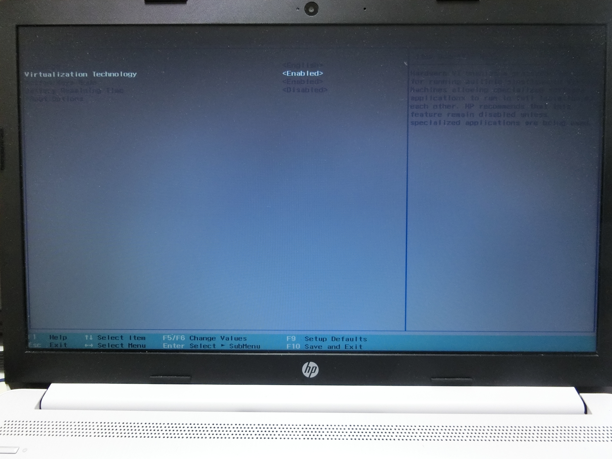
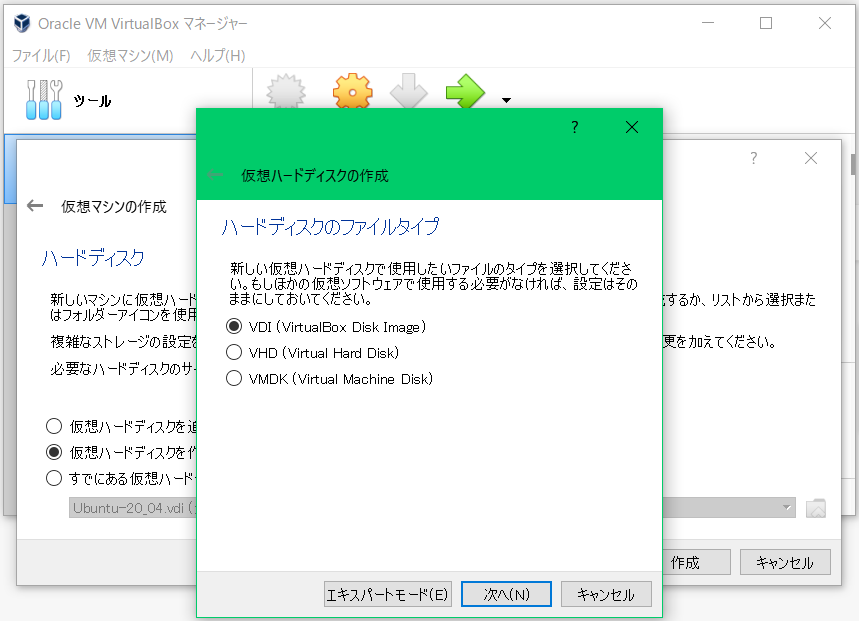

パソコンをF2やF10(機種によって違います)キーを押しながら再起動して、BIOS画面を表示させて、
CPUのオプションからVirtualization Technologyを探して、有効(Enabeled)にしてから設定をセーブして、OSを起動します。
画面はHPのノートブックの例です。

名前にUbuntuと入れると、タイプ: Linux、バージョン: Ubuntu(64-bit)が自動的に選択されるようです。違っている場合は、図のように選択してください。


Ubuntuをインストールをクリックして、指示に従い、すべてデフォルトでインストールします。

左下のアプリケーションを起動するのボタンをクリックして、アプリをすべて表示にして、ページを繰って「端末」をクリックして起動します。
$ sudo apt update $ sudo apt upgrade $ sudo apt install curl $ sudo apt install git $ git clone https://github.com/akiomiyao/ped.git